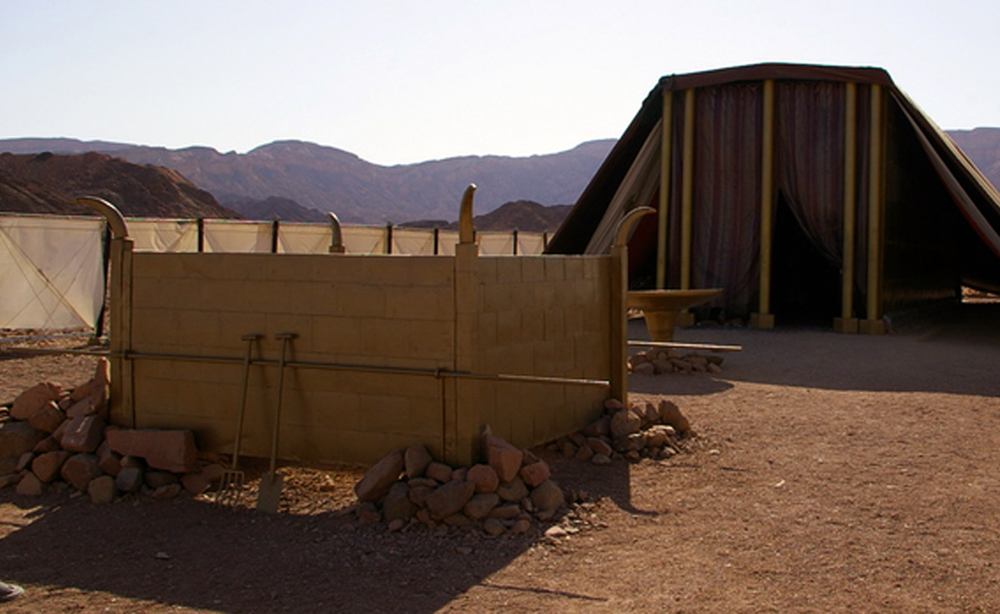

O Altar De Bronze De Sacrifícios/Altar de holocausto
Para um adorador daquele tempo que tinha como objetivo encontrar perdão para os seus pecados, primeiro tinha que passar pela entrada do tabernáculo, depois disso o próximo destino seria o altar de bronze de sacrifícios. Neste altar é onde o adorador vai sacrificar o seu animal para expiar seus pecados.
O Procedimento
Primeiramente o adorador pousava a sua mão na cabeça do animal, isto era feito como um sinal que o adorador reconhece que o seu animal é inocente e vai morrer pelos pecados do adorador. Logo em seguida o sacerdote entregava uma faca ao adorador para cortar a garganta do animal. Durante esse processo o sacerdote coletava o sangue do animal. Depois, o animal era posto em uma mesa onde era cortado em diferentes metades. Uma metade era dada ao sacerdote e outra ao adorador que levaria para casa para comer com a sua família. O resto das metades eram levadas para ao altar para serem dadas como sacrifício. Enquanto um dos sacerdotes estava a dar as outras metades como sacrifício, um outro sacerdote estaria a manchar os 4 chifres do altar com o sangue do animal coletado e o resto sangue ele despejava nos pés do altar. O fogo do altar não podia ser apagado, ele tinha que arder continuamente (Levítico 6.13).
Diferentes animais eram sacrificados para diferentes grupos de pessoas (Pecados de ignorância)
O animal que seria sacrificado dependia da tua posição na comunidade de Israel:
- Para o sumo sacerdote um novilho sem defeito era necessário para expiar seus pecados (Levítico 4:3).
- Para a comunidade inteira de Israel junta um novilho sem defeito era necessário para expiar seus pecados (Levítico 4:13-14).
- Para os líderes de uma tribo um bode sem defeito era necessário para expiar seus pecados (Levítico 4:23).
- Para pessoas comuns uma cabra era necessário para expiar os seus pecados (Levítico 4:27-28).
Portanto assim que era o sistema de sacrifícios de animais para a expiação de pecados. Todavia este sistema é imperfeito pois estes animais eram incapazes de providenciar uma limpeza perfeita para os adoradores. Por isso houve a necessidade de Cristo descer e oferecer-se como sacrifício vivo para nos remir. Mas porquê Cristo? Bom, por que Ele nos ama e quer que nós tenhamos uma relação com o Pai envés de morrer e ir para o inferno, então Jesus um homem perfeito, nunca pecou e nas palavras de João Jesus era O Cordeiro de Deus, que tira o pecado do mundo!
desce e entra no mundo por uma virgem chamada Maria com o objetivo de nos remir e nos dar uma nova vida nele. Por Ele ser perfeito, isto é, sem nenhum pecado Ele foi capaz de completar este antigo e ineficaz sistema de expiação de pecados. E como ele fez isso? Bom, ele se ofereceu como sacrifício vivo e sobre ele levou os meus pecados e os teus pecados, os pecados de toda humanidade Ele carregou nas suas costas. Um sacrifício perfeito.
Levítico 1:9 fala sobre o quão bom era o aroma da oferta queimada para Deus. Olha o que Efésios 5:2 diz sobre o sacrifício de Jesus: e andai em amor, como também Cristo nos amou e se entregou a si mesmo por nós, como oferta e sacrifício a Deus, em aroma suave
.
Nós somos os novos sacerdotes
No Antigo Testamento nós conseguimos observar que o povo não tinha um contacto direto com Deus. Os sumos sacerdotes eram intermediários de Deus ao povo de Israel. Eles faziam os sacrifícios, limpavam o templo, oravam pelos os pecados do povo, etc. Ademais, em Êxodo 29:38-29 podemos ver quer os sacerdotes do tabernáculo de Moisés ofereciam sacrifícios todos os dias duas vezes por dia. Isto tudo só os sacerdotes é que faziam pelo povo de Israel. Porem, Jesus Cristo mudou tudo com a sua morte. 1 Pedro 2:5 diz que nós agora somos sacerdotes santos a fim de oferecer sacrifícios espirituais agradáveis a Deus por intermédio de Jesus Cristo. Isto quer dizer que todos nós podemos entrar na presença de Deus, pois todos nós somos sacerdotes santos. Não há mais a necessidade de animais para sacrifícios imperfeitos, uma vez que o perfeito sacrifício aconteceu na cruz. Isto é Deus a ti convidar para ter comunhão com Ele, é Deus a nos dizer Olha, eu te amo tanto que eu vou retirar essas barreiras que tornam a tua chegada a te mim difícil, eu vou mandar o meu Filho para fazer um caminho mais fácil, isto tudo porque eu quero ter comunhão com você